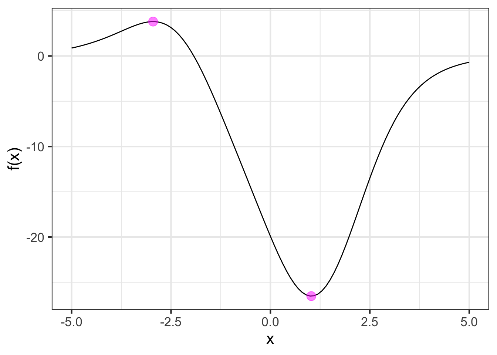

47 Operations on functions
Block 1 introduced the idea of mathematical modeling: creating a representation of some aspect of the world out of mathematical “stuff.” The relevant “stuff” includes the concept of a function with its inputs and output, units and dimensions of quantities, frameworks such as the basic modeling functions and ways of combining functions via linear combination, composition, and multiplication.
Our emphasis in calculus has been and will continue to be functions. This contrasts with high-school algebra where the emphasis was on equations and manipulations such as the movement of quantities from one side of the equal sign to another.
It pays to think a little about what equations mean and what information they are intended to convey. Consider an equation like \[{\mathbf{\text{equation:}}}\ \ \ x^2 - 4 x + 3 = 0\] which you might see in a beginning algebra text. What does this equation mean?
A simple equation like \(3 + 4 = 7\) is a statement of fact: three plus four is indeed the same as seven. But \(x^2 - 4 x + 3 = 0\) is not a fact. The equality might be true or false, depending on what \(x\) happens to be. In an algebra course, the equation is intended to be an instruction to a person: \[\text{Given}\ x^2 - 4 x + 3 = 0, \ \ \text{find x.}\] or, equivalently, \[\text{Solve}\ x^2 - 4 x + 3 = 0\ \ \text{for}\ x.\] “Find \(x\)” or “Solve for \(x\)” direct you to determine which numerical values (if any) when substituted for \(x\) in the equation will produce a true statement.
“Solve for \(x\)” is an example of a mathematical task. We undertake such tasks to extract useful information from a mathematical object. For instance, textbook “word problems” involve two phases: i) a modeling phase where you translate a verbal description of a situation—often involving paddling canoes across a flowing river—into a matching mathematical form and ii) having constructed a suitable mathematical form, you apply some mathematical task to the form to reveal the answer you seek.
This chapter looks at a small list of mathematical tasks, calling them operations on functions. These operations, combined in various ways, enable you to extract relevant information from the functions you build in your models. A simple important part of this introduction is to give a name to each task. That way, confronted with a mathematical problem, you will be able to look down the short mental menu of opertions to decide which ones are applicable to your circumstance. Even better, once each operation has a name, you can tell a computer to do it for you.
Here are four common mathematical tasks that you’ve already encountered in Blocks 1 through 3 of this book:
- Given a function and specific values for the inputs, apply the function to the inputs to produce an output. This is also called evaluating a function on inputs.
- Given a function and the name of a with-respect-to input, construct a new function that is the derivative of the given function. The name for this task is to differentiate the function.
- Like (2), given a function and the name of a with-respect-to input, anti-differentiate the function.
- Given a function and an interval of the domain of that function, accumulate the function on that interval. This is named to integrate the function on the interval. (You may recognize that you can perform this task by breaking it down into task (3) and then applying task (1) twice to the result. That is, \(\int_a^b f(t) dt = F(b) - F(a)\).)
In this chapter, we focus on the following operations on functions that you may not yet have mastered.
- Given a function and an output value from the function, find values for an input (or inputs) which will generate that output value. This is the solving task. A closely related task is zero-finding, which is to find an input that will cause the function to produce the output zero.
- Given a function and an interval of the domain, find an input value that will produce an output value that is higher than would be produced for nearby inputs. As you might recognize, this is called finding an argmax. The problem of finding an argmin is the same kind of problem, and can be solved by finding the argmax of the negative of the function.
- Given a function and an input value, iterate the function to produce a new input that will be better than the original for some purpose.
These seven tasks allow you to perform the mathematical work of extracting useful information from a model. Human judgement and creativity is needed to construct the model. And judgement and experience is needed to figure out which tasks to perform and in what order. But carrying out the tasks does not require judgement, experience, or creativity. Performing the tasks requires only an algorithm and the tools to step through the algorithm. Computers are excellent for this; you just have to give them the function and whatever additional input is required (e.g. the name of a with-respect-to input), and then tell the computer which task it is to perform.
47.1 Task: Solve
Starting materials:
- a function \(f(x)\),
- a known output value \(v\), and
- a candidate for a suitable input value \(\color{brown}{x_0}\)
Ideal result from the algorithm: A new candidate \(\color{magenta}{x^\star}\) such that \(f(\color{magenta}{x^\star}) = v\) or, equivalently, that \[\left\|\strut f(\color{magenta}{x^\star}) - v \right\| = 0\ .\]
Realistic result from the algorithm: The new candidate \(\color{magenta}{x^\star}\) will be better than \(x_0\), that is, \[ \left\|\strut f(\color{magenta}{x^\star}) - v\right\|\ \ {\mathbf <}\ \ \left\|\strut f(\color{brown}{x_0}) - v\right\|\] One algorithm for the operation involves approximating the function \(f(x)\) with a straight-line function \(\widehat{f}(x) = a x + b\). For straight-line functions, the solution \(x^\star\) can be found by simple arithmetic:
\[a x^\star + b - v = 0 \ \ \implies \ \ \ x^\star = \frac{b-v}{a}\] You saw in Block 2 how to construct the straight-line approximation to a function \(f()\) in a region of interest near \(x_0\) by evaluating the function and its derivative at \(x_0\). In other words, \[\widehat{f}(x) \equiv f(x_0) + \partial_x f(x_0) \left[\strut x - x_0 \right]\ .\]
Because \(\widehat{f}(x)\) is a straight-line function, it is easy to find an input \(x_1\) that will generate exactly the desired output value \(v\). In other words, to solve \(\widehat{f}(x_1) = v\) for \(x_1\).
\[\begin{equation} x_1 = x_0 + \frac{v-f(x_0)}{\partial_x f(x_0)} \end{equation}\]
Although \(x_1\) is an exact solution to the approximate problem, all we can hope is that for nonlinear \(f(x)\), \(x_1\) will be an approximate solution to the actual problem. In particular, we want \(x_1\) to be a better guess than \(x_0\): \[\|f(x_1) - v\| \underbrace{\ \ <\ \ }_\text{We hope!} \|f(x_0) - v\|\]
This (hopefully) improved solution \(x_1\) can become the starting guess for a new round of improvement based on the straight-line approximation to \(f(x)\) around \(x_1\). The refinement of \(x_1\) will be calculated as \[\begin{equation} x_2 = x_1 + \frac{v-f(x_1)}{\partial_x f(x_1)} \end{equation}\]
Each round of improvement—that is, “iteration”—calculates a new value \(x_{i+1}\) from the previous \(x_i\). The improvement can be encapsulated as a function, which we will call solve_step(): \[\text{solve-step}(z) \equiv z + \frac{v-f(z)}{\partial_x f(z)}\ .\]
This particular form of solve_step() is called a Newton step. The idea is to take successive steps, each refining the previous approximation, to get closer and closer (hopefully!) to the actual answer \(x^\star\):
\[x_1 = \text{solve-step}(x_0)\\ x_2 = \text{solve-step}(x_1)\\ x_3 = \text{solve-step}(x_2)\\ \vdots\\ x_{i+1} = \text{solve-step}(x_{i})\\\ \\ \text{until eventually}\ \|f(x_{i+1}) - v\|\ \text{is practically zero.}\]

Construct the Newton-step function for finding zeros of the function \[f(x) \equiv x^2 - x\ \]
Since \(\partial_x f(x) = 2 x - 1\), the custom-built Newton-step function will be: \[\text{solve-step}(z) = z - \frac{z^2 - z - 4}{2 z - 1}\]
The algorithm requires a starting guess. We will use \(x_0 = 2\). After each application of solve_step(), we will print out the refined value as well as the function output at that refined value.
x0 <- 2
x1 <- solve_step(x0)
f(x1)
## [1] 4.444444
x2 <- solve_step(x1)
f(x2)
## [1] 4.010519
x3 <- solve_step(x2)
f(x3)
## [1] 4.000006The output \(f(x_3)\) is practically the desired \(v=4\) so we have our result: \(x^\star = 2.56155\)!
After the first Newton step, producing \(x_1 = 2.666666\), the function output and \(f(x_1) = 4.44444\) was not sufficiently close to the desired output for us to take \(x_1\) as the solution. You can think of the problem like the task of digging a well. You need to start with the first shovelful. Then take another and another and … until you have your well.
Newton’s method involves creating a custom solve_step() function for each new problem. The process is simple enough that we can create such functions automatically:
make_solve_step_fun <- function(tilde, v) {
f <- makeFun(tilde)
df <- D(tilde)
custom_fun <- function(z) {z + (v-f(z))/df(z)}
return(custom_fun)
}Let’s test it out with this function:
f <- makeFun(x^2 - x ~ x)Construct the take-a-step function:
take_step <- make_solve_step_fun(f(x) ~ x, v=4)Take three steps starting at \(x_0 = 3\):
x0 <- 3
x1 <- take_step(x0)
x2 <- take_step(x1)
x3 <- take_step(x2)
f(x3)
## [1] 4The Newton-step process is not guaranteed to work. By exploring cases where it fails, computational mathematicians1 have developed strategies for increasing the range of situations for which it works. Some of these strategies are incorporated in the R/mosaic function Zeros().
Zeros() takes two arguments: a function and a domain. The function is specified, as with other R/mosaic operators such as D(), slice_plot(), etc., as a tilde expression. Zeros() searches the domain for an input which makes the value of the function zero. If, instead, you want to find an input that makes the function value some other value, say \(f(x^\star) = v\), you construct an intermediate expression f(x) - v ~ x. Finding the zero of the intermediate function corresponds to finding \(f(x^star) = v\).
Sometimes there will be multiple zeros on the specified domain. To handle such situations, Zeros() returns a data frame with two columns. The first gives input values that correspond to an output near zero. The second column, named .output. calculates the output (and will be near zero). We will illustrate by solving \(x^3 = 6\) for \(x\).
Zeros(x^3 - 6 ~ x, domain(x=c(1,6)))
## # A tibble: 1 × 2
## x .output.
## <dbl> <dbl>
## 1 1.82 0.00000037547.2 Task: Argmax
The task of finding the input value that corresponds to a local maximum is called argmax finding. We don’t need to know the value of the local maximum to solve this problem. Instead, we designate a locale by specifying an initial guess \(x_0\) for the argmax. For argmax finding of an objective function \(f(x)\), we seek a \(x^\star\) such that \(f(x^\star) > f(x_0)\).
To accomplish this, we will approximate \(f(x)\) with a low-order polynomial, as we so often do. We will call the approximation \(\widehat{f(x)}\). In the solving task, the approximation was with a first-order polynomial. But first-order polynomials—that is, straight-line functions—don’t have a local argmax. We need to use a second-order polynomial. Easy enough: construct the second-order Taylor polynomial around \(x_0\):
\[\widehat{f}(x) \equiv f(x_0) + f'(x_0) \left[x - x_0\right] + \frac{1}{2} f''(x_0) \left[x-x_0\right]^2\] Remember that \(f(x_0)\), \(f'(x_0)\) and \(f''(x_0)\) are all fixed quantities; the output of the functions for the specific input \(x_0\).
To find the argmax of \(\widehat{f}(x)\), differentiate it with respect to \(x\) and find the zero of the derivative: \[\partial_x \widehat{f(x)} = f'(x_0) \underbrace{\partial_x\left[x - x_0\right]}_{{\large\strut}1} + \frac{1}{2} f''(x_0) \underbrace{\partial_x\left[x-x_0\right]^2}_{2 \left[x - x_0\right]} = 0 \]
This gives \[f'(x_0) + f''(x_0) \left[x - x_0\right] = 0\ .\] We will solve this equation for \(x\) and, having in mind the iterative process of the previous section, call the result \(x_1\) \[x_1 = x_0 - \frac{f'(x_0)}{f''(x_0)}\ .\] In other words, our new guess \(x_1\) will be a step away from the old guess \(x_0\), with the step being \(-f'(x_0) / f''(x_0)\). This also is called a Newton step. What’s different from the Newton step of the previous section is that the function whose zeros are being sought is not \(f(x)\) but \(f'(x)\).
Use the R/mosaic argM() function to find argmaxes and argmins. Like other R/mosaic calculus functions, the first argument is a tilde expression defining the objective function. The second argument is the domain to search.
To illustrate, the following code creates a randomly shaped function (displayed in ?fig-argm-ex1) and calls argM() to generate the argmaxes and argmins.
f <- rfun(~ x, 3215)
argM(f(x) ~ x, domain(x = -5:5))
## # A tibble: 2 × 3
## x .output. concavity
## <dbl> <dbl> <dbl>
## 1 1.03 -26.5 1
## 2 -2.95 3.80 -1Notice that argM() identified both a local maximum and a local minimum, that is, one argmax and one argmin. Visually, it is easy to tell which one is which. In terms of the data frame returned by argM(), the sign of the concavity does the identification for you: positive concavity points to an argmin, negative concavity to an argmax. The name argM() refers to this versatility of finding both argmins and argmaxes.
47.3 Task: Iterate
In everyday language, to iterate means simply to repeat: to do something over and over again. In mathematics and in computing, “iterate” has a more specific meaning: to repeatedly perform an operation, each time taking the output from the previous round as the input to the current round.
For our purposes, it suffices to define iteration in terms of the use of a function \(g(x)\). The function must be such that the output of the function can be used as an input to the function; the output must be the same kind of thing as the input. The iteration starts with a specific value for the input. We will call this value \(x_0\). Iteration then means simply to compose the function with itself starting with \(x_0\) as the initial input. Here, for instance, is a four-step iteration: \[g(g(g(g(x_0))))\] Or, you might choose to iterate for ten steps: \[g(g(g(g(g(g(g(g(g(g(x_0))))))))))\] However many iteration steps you take, the output from the final step is what you work with.
Iteration is the mathematical engine behind many function operations. You’ve already seen it at work for the “solve” task and the “argmax” task.
The R/mosaic function Iterate() provides a very simple way to see the results of iteration. Typically when iteration is used as part of a function operation, the software has been written specifically for that task and includes logic about when to stop or start over or handle a variety of troublesome cases. The function Iterate() is provided in R/mosaic just for demonstration purposes.
Iterate() takes arguments specifying the function to be iterated (as a tilde expression), the starting \(x_0\), and the number \(n\) of steps to take. To illustrate, we will iterate a famous function called the logistic map: \(f(x) \equiv \mu x (1-x)\). Depending on the value of the parameter \(\mu\), the iterates can show different patterns.
Eventually reaching a fixed point: ::: {.cell layout-align=“center” fig.showtext=‘false’}
Iterate(2*x*(1-x) ~ x, x0=0.3, n=10)
## n x
## 1 0 0.3000000
## 2 1 0.4200000
## 3 2 0.4872000
## 4 3 0.4996723
## 5 4 0.4999998
## 6 5 0.5000000
## 7 6 0.5000000
## 8 7 0.5000000
## 9 8 0.5000000
## 10 9 0.5000000
## 11 10 0.5000000Eventually reaching a periodic oscillation: ::: {.cell layout-align=“center” fig.showtext=‘false’}
Iterate(3.2*x*(1-x) ~ x, x0=0.3, n=50) |> tail()
## n x
## 46 45 0.5130445
## 47 46 0.7994555
## 48 47 0.5130445
## 49 48 0.7994555
## 50 49 0.5130445
## 51 50 0.7994555:::
A never-ending, random-seeming fluctuation, called mathematical chaos:
Iterate(4.0*x*(1-x) ~ x, x0=0.3, n=5000) |> tail()
## n x
## 4996 4995 0.56824790
## 4997 4996 0.98136889
## 4998 4997 0.07313595
## 4999 4998 0.27114833
## 5000 4999 0.79050766
## 5001 5000 0.66242119:::
47.4 Software for the tasks
Evaluation of a function—number one in the list at the head of this chapter—is so central to the use of computer languages generally that every language provides a direct means for doing so. In R, as you know, the evaluation syntax involves following the name of the functions by a pair of parentheses, placing in those parenthesis the values for the various arguments to the function. Example: log(5)
The other six operations on functions listed above, there is one (or sometimes more) specific R/mosaic functions. Every one of them takes, as a first argument, a tilde expression describing the function on which the operation is to be formed; on the left side is a formula for the function (which can be in terms of other, previously defined functions), on the right side is the with-respect-to input.
- Differentiate:
D(). Returns a function. - Anti-differentiate:
antiD(). Returns a function. - Integrate:
Integrate(). Returns a number. - Solve:
Zeros(). Returns a data frame with one row for each solution found. - Argmax:
argM()Finds one argmax and one argmin in the domain.local_argM()looks for all the local argmaxes and argmins. Returns a data frame with one row for each argmax or argmin found. - Iterate:
Iterate()Returns a data frame with the value of the initial input and the output after each iteration.
Each of operations 4-6 involves the specification of a domain. For Integrate(), this is, naturally, the domain of integration: the upper and lower bounds of the integral
For Zeros() and argM() the domain specifies where to search for the answer. Iterate() is slightly different. After the tilde expression comes an initial value \(x_0\) and then n= which you use to set the number of times to iterate.
47.5 Exercises
Exercise 48.01
Create a function, which iterated sufficiently from a starting guess, will implement Newton’s method to calculate \(\sqrt{10}\).
Part A Which of these functions is appropriate to use in Newton’s method for calculating \(\sqrt{10}\)?
- \(f(x) \equiv x^2 - 10\)
- \(f(x) \equiv x - \sqrt{10}\)
- \(f(x) \equiv (x - 10)^2\)
Now you will translate \(f(x)\) into a function, when iterated from some starting guess \(x_0\), will tend toward a zero of \(f(x)\). The function will have the form \[N(x) \equiv x - \frac{f(x)}{f'(x)}\ .\]
Part B What is the function \(f'(x)\) for the \(\sqrt{10}\) problem?
- \(2x - 10\)
- \(2x\)
- \(\frac{1}{3} x^3 + 10 x + C\)
- \(x\)
Part C Which of these is the correct form for the Newtons-method iterator \(N(x) \equiv x - \frac{f(x)}{f'(x)}\)?
- \(N(x) \equiv x - \frac{x^2 - 10}{2 x}\)
- \(N(x) \equiv x + \frac{x^2 - 10}{2 x}\)
- \(N(x) \equiv x + \frac{2x}{x^2 - 10}\)
- \(N(x) \equiv x - \frac{2x}{x^2 - 10}\)
In a SANDBOX, implement \(N(x)\).
Part D Using \(N()\) as the dynamics and starting with \(x_0 = 1\), what is \(x_5\)?
5.5 3.659091 3.141593 3.196005 3.162456 3.162354 3.162278
Part E Modify N() to find \(\sqrt{20}\). Starting at \(x_0=1\), how many times do you have to apply your new N() to get an answer right to within 1% of the true number?
- After 2 steps we get 4.202
- After 3 steps we get 4.713.
- After 3 steps we get 4.472.
- After 4 steps we get 4.472.
- After 4 steps we get 4.478.
Part F Modify your N() once again to find \(\sqrt[3]{10}\). (That is, the cube-root of 10.) Starting at \(x_0 = 1\), take 3 Newton steps. What is \(x_3\)?
2.154 2.320 2.875 2.912
Exercise 48.03
- Write a Newton-step
better()function to solve for \(x\) in the equation \(\sin(x) = \cos(x)\). Start with the guess \(x_0 = 0\) and iteratebetter()enough times to get \(\| x_i - x^\star\| < 0.001\).
To help, we will give the hint that \(x^\star \approx 0.785\).
- Suppose we hadn’t told you the answer \(x^\star\). How could you know, just from your iterations of
better(), that you are very close to the true answer.
Exercise 48.04
We introduced Newton’s method as a technique for finding zeros of functions. For instance, for finding zeros of \(g(x)\), you would apply the function better() iteratively to an initial guess \(x_0\).
\(\text{better}(x) \equiv x - \frac{g(x)}{\partial_x g(x)}\)
A. Suppose your goal is not to find a zero of \(g(x)\) but instead to find an argmax. One way to do this is to find the zeros of \(\partial_x g(x)\). Write down the Newton-step suitable for the argmax problem.
B. Imagine that \(g(x)\) has an output of miles-per-gallons and an input speed in miles-per-hour. What will be the dimension of the Newton step for the optimization problem?
C. Taking into account the dimension of the input \(x\) and of the output \(f(x)\), what is the dimension of the step \(-f'(x_0) / f''(x_0)\). Explain why this makes sense in terms of what a step needs to be.
Exercise 48.05
Part A Which of the following R/mosaic functions takes an initial condition as one of the inputs?
antiD() D() Iterate()
Part B Which of the following R/mosaic functions requires that you specify a domain as one of the inputs to the function?
antiD() D() Iterate() Solve()
Part C The R/mosaic functions Solve() and argM() return what kind of computer object?
a number a function a graph a data frame
Exercise 48.06
A simple robot arm to move things in the \((x,y)\) plane consists of two links, the first connected to the base of the robot and the second to the free end of the first link, as in the diagram. At the end of the second link is a tool, such as a drill. Such a robot would be used to drill a series of precisely positioned whole in a metal plate.
Each link is moved by a digitally-controlled motor. To position the robot, commands are sent to the two motors to set their respective angles. For instance, in the diagram the motor-1 angle, \(\theta_1\) is set to 45 degrees, while the motor-2 angle \(\theta_2\) is set to -60 degrees.
The problem faced by the robot designer is to allow the user to input a series of \((x,y)\) coordinates (where the holes are to be drilled) and have the robot controller calculate the resulting angles.
For simplicity, assume that the link lengths are both \(L = 1\), but generalizing this to two different link lengths would not be difficult.
At this point, play with the problem a bit. Mark a point on your desk or paper. This will be the location of the base of the robot. Take two pencils, let’s call them “yellow” and “green,” putting the eraser of yellow at the base location and the eraser of green at the tip of yellow. Now, pick another point on your desk or paper to be the target for the robot arm. (This must be closer to the base than the sum of lengths of the two pencils.) Change the orientation of the pencils, keeping yellow attached to the base and green attached to the tip of yellow. Your job is to find an orientation that will place the tip of green on the target. Try different target points until you feel comfortable that you understand how to solve the problem.
Now to create a mathematical model of the situation so that we can automate the solution. The purpose of this model is to find \(\theta_1\) and \(\theta_2\) given the \((x, y)\) position of the target.
From your experience using pencils as the model of the robot, you may have noticed that the location of the “elbow” of the robot arm is key to the solution. Find the right position for the elbow and the angles can be calculated from trigonometry.
Note that the position of the elbow, which we will denote with coordinates \((u, v)\) is determined solely by \(L\) and \(\theta_1\).
Write down a formula for the \(u\) and for the \(v\) position of the elbow as a function of \(\theta_1\) (taking the base as the origin). Hint: sine and cosine functions are relevant.
Implement the formulas from (1) into two functions, one called
elbow_u(theta1)and the otherelbow_v(theta1).Write another function,
elbow_to_target_dist(theta1, x, y)that will useelbow_u()andelbow_v()to calculate the distance from the elbow to the target point \((x, y)\). (The distance will be \(\sqrt{\strut (x - u)^2 + (y-v)^2}\).)Write yet another function,
dist_at_theta(theta1, x, y)that, given an angle theta, will return the distance from the elbow to the target. The logic is to useelbow_u()andelbow_v()to find the location of the elbow \(u\) and \(v\) and then give these as the argments toelbow_to_target_dist().The next phase of the solution is to use
elbow_to_target_dist(theta1, x, y)to find a value oftheta1that will make the distance equal to the length \(L\) of link2. When you have found thistheta1, you will know the position of the elbow that is consistent with reaching the target from the base with the two links.- Pick a target location. This can be anything within distance \(2L\) from the base. We will call the coordinates of your target
target_xandtarget_y. - Plot out
elbow_to_target_dist(theta1, x=target_x, y=target_y)as a function oftheta1over the domain \(-\pi \leq \theta_1 \leq \pi\). - Locate a value of \(\theta_1\) where the output of the function is \(L\).
- Pick a target location. This can be anything within distance \(2L\) from the base. We will call the coordinates of your target
Write another function,
elbow_theta1(x, y)that takes the \((x, y)\) position as input and produces as output suitable value(s) of \(\theta_1\). To do this within theelbow_theta1(x, y)function, useZeros(dist_at_theta(theta1) - L, domain(theta1=-pi:pi)).
A traditional name for such a person is “numerical analyst.”↩︎